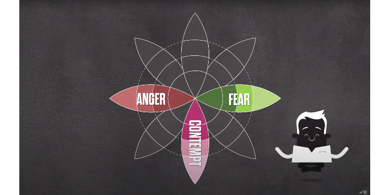
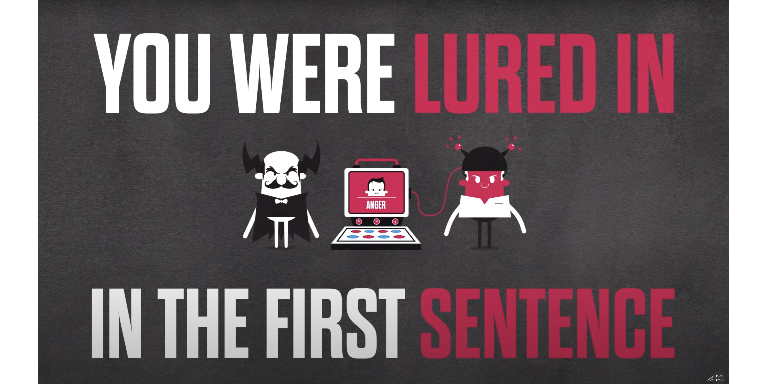
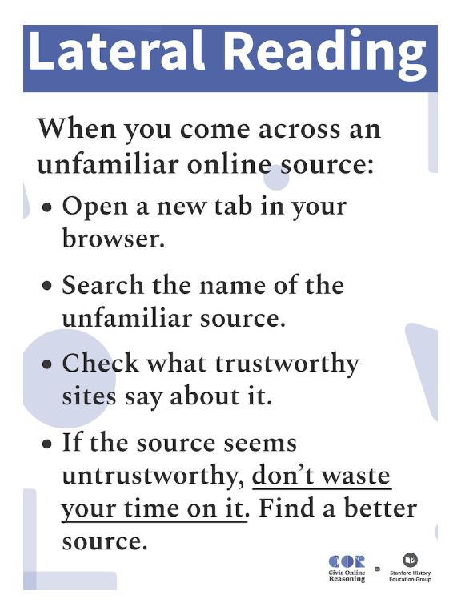
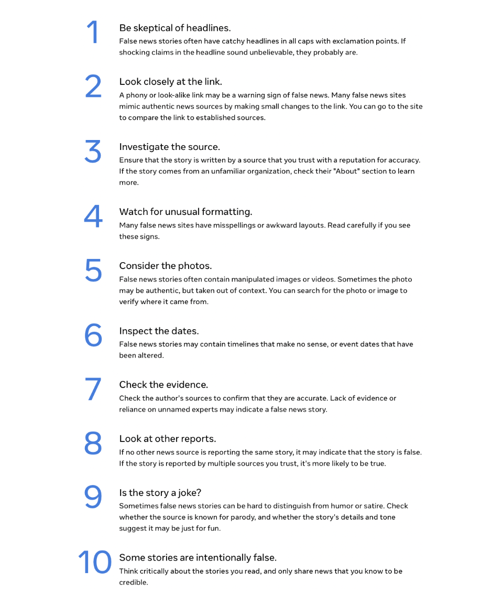

Toolbox: Examples
Last updated: 2024-02-20
Checks: 7 0
Knit directory: toolbox/
This reproducible R Markdown analysis was created with workflowr (version 1.7.1). The Checks tab describes the reproducibility checks that were applied when the results were created. The Past versions tab lists the development history.
Great! Since the R Markdown file has been committed to the Git repository, you know the exact version of the code that produced these results.
Great job! The global environment was empty. Objects defined in the global environment can affect the analysis in your R Markdown file in unknown ways. For reproduciblity it’s best to always run the code in an empty environment.
The command set.seed(20220228) was run prior to running
the code in the R Markdown file. Setting a seed ensures that any results
that rely on randomness, e.g. subsampling or permutations, are
reproducible.
Great job! Recording the operating system, R version, and package versions is critical for reproducibility.
Nice! There were no cached chunks for this analysis, so you can be confident that you successfully produced the results during this run.
Great job! Using relative paths to the files within your workflowr project makes it easier to run your code on other machines.
Great! You are using Git for version control. Tracking code development and connecting the code version to the results is critical for reproducibility.
The results in this page were generated with repository version b19567b. See the Past versions tab to see a history of the changes made to the R Markdown and HTML files.
Note that you need to be careful to ensure that all relevant files for
the analysis have been committed to Git prior to generating the results
(you can use wflow_publish or
wflow_git_commit). workflowr only checks the R Markdown
file, but you know if there are other scripts or data files that it
depends on. Below is the status of the Git repository when the results
were generated:
Ignored files:
Ignored: .Rproj.user/
Untracked files:
Untracked: data/~$toolbox_evidence.xlsx
Unstaged changes:
Modified: README.md
Modified: _workflowr.R
Modified: analysis/_site.yml
Deleted: code/README.md
Deleted: data/README.md
Deleted: images/Criticalignoring_lnos.png
Deleted: images/Debunking_lnos.png
Deleted: images/Screenshot 2023-10-10 at 08.24.44.png
Deleted: images/Screenshot 2023-10-10 at 08.25.18.png
Deleted: images/Screenshot 2023-10-10 at 08.26.04.png
Deleted: images/Screenshot 2023-10-10 at 08.27.33.png
Deleted: images/Screenshot 2023-10-10 at 08.46.36.png
Deleted: images/Screenshot 2023-10-10 at 08.51.23.png
Deleted: images/debunk_4steps.png
Deleted: images/debunk_steps.png
Deleted: images/debunking.png
Deleted: images/minimal-media-literacy-tips.jpeg
Deleted: images/warning-labels-01.png
Deleted: images/warning-labels-02.png
Deleted: images/warning-labels.png
Deleted: output/README.md
Modified: output/figure_map.pdf
Deleted: output/figure_map.png
Deleted: output/figure_map2.pdf
Modified: output/infos_raw.json
Modified: output/infos_refined.json
Deleted: output/table_concept.png
Deleted: output/tbl_concept.tex
Note that any generated files, e.g. HTML, png, CSS, etc., are not included in this status report because it is ok for generated content to have uncommitted changes.
These are the previous versions of the repository in which changes were
made to the R Markdown (analysis/table_examples.Rmd) and
HTML (public/table_examples.html) files. If you’ve
configured a remote Git repository (see ?wflow_git_remote),
click on the hyperlinks in the table below to view the files as they
were in that past version.
| File | Version | Author | Date | Message |
|---|---|---|---|---|
| html | 1a1a155 | Kozyreva | 2023-11-30 | minor updates |
| Rmd | 5be9264 | Kozyreva | 2023-11-24 | what should be the final version of the toolbox 2.0 |
| html | 5be9264 | Kozyreva | 2023-11-24 | what should be the final version of the toolbox 2.0 |
| html | 22a40df | Kozyreva | 2023-10-24 | v2 updates |
| html | 663ae9c | Kozyreva | 2023-10-24 | Build site. |
| Rmd | 3efec23 | Kozyreva | 2023-10-24 | wflow_publish(files = files, republish = TRUE, delete_cache = TRUE, |
| Rmd | c2b8b90 | Kozyreva | 2023-10-12 | v2 branch update |
| html | c2b8b90 | Kozyreva | 2023-10-12 | v2 branch update |
This part of the online supplement provides examples for each intervention types included in our toolbox. Please note that these are not exaustive examples and implementation of each intervention type can take on different forms.
Accuracy Prompts
| Version | Author | Date |
|---|---|---|
| 663ae9c | Kozyreva | 2023-10-24 |
To the best of your knowledge, is the above headline accurate?
◯ Yes
◯ No
Source: A reproduction of a treatment condition from Pennycook et al. (2020), Study 2 Materials.
Rebuttals of science denialism
Florian Hantzsch (Interviewer): Mr. Stefan Müller from the Neustaedter Vaccine-Sceptics, how safe is the vaccine against dysomeria?’
Science denialism. Stefan Müller (Science Denier 1): ‘The lack of safety is an important issue with the dysomeria vaccine. The side effects and risks of the vaccine are incalculable. As a patient, you do not know how the body reacts to the vaccine before administration. Even if you feel healthy immediately after the shot, harmful substances may have entered your body. Doctors cannot guarantee in advance that there will not be any complications. In my opinion, you cannot expect any fellow citizen to vaccinate as long as the vaccine is not 100% safe. Surely, it is not too much to ask that a product injected into a healthy human be 100% safe.’
Florian Hantzsch (Interviewer): ‘Thank you, Mr. Müller. Mr. Jürgen Schmidt from the Health Office in Neustadt, how do you respond to that?’
Rebuttal. Jürgen Schmidt (Science Advocate 1): ‘Mr. Müller demands 100% safety from the vaccine against dysomeria. In science, this argument is called impossible expectation. It is an impossible expectation because science can never guarantee 100% safety for any medical product, neither for aspirin nor for heart surgery. Any treatment poses a residual risk of complications for patients either during or after treatment. The scientific evidence is clear: The vaccine against dysomeria is a safe way to avoid the disease. The risk of dysomeria by far exceeds the risk from vaccination. This is why we, the Health Office in Neustadt, recommend the vaccination against the DS virus for citizens of all ages. And please let me add the following regarding the safety of the vaccine: We follow a very strict protocol to ensure the high quality of vaccines in the Federal States. This also is demonstrated by the fact that every batch of the vaccine against dysomeria constantly is monitored and independently screened by official control laboratories.’
Source: A transcript of messages delivered by deniers and advocates in a video used as a treatment condition, available in the Supplementary Information in Schmid et al. (2020). Note: original materials were in German.
Friction
| Version | Author | Date |
|---|---|---|
| 663ae9c | Kozyreva | 2023-10-24 |
Please explain how you know that the headline is true or false.
Source: A reproduction of a treatment condition with a friction sentence taken from Fazio (2020).
Inoculation

| Version | Author | Date |
|---|---|---|
| 663ae9c | Kozyreva | 2023-10-24 |

| Version | Author | Date |
|---|---|---|
| 663ae9c | Kozyreva | 2023-10-24 |
Source: Screenshots from the instructional video on the use of Emotional Language. All videos can be viewed on the Inoculation Science website.
Relevant scientific article: Rozenbeek et al., 2022.
Lateral Reading

| Version | Author | Date |
|---|---|---|
| 663ae9c | Kozyreva | 2023-10-24 |
Source: A poster to remind students to implement this strategy when they come across an unfamiliar source. This poster and more materials available on the Civic Online Reasoning website.
Relevant scientific article: Wineburg et al., 2022.
Media-Literacy Tips

| Version | Author | Date |
|---|---|---|
| 663ae9c | Kozyreva | 2023-10-24 |
Source: Pictured ten “Tips to spot fake news” created and made accessible by Facebook.
Relevant scientific article: Guess et al, 2020.
Minimal Media-Literacy Tips
Think carefully about the news with these tips
| Version | Author | Date |
|---|---|---|
| 663ae9c | Kozyreva | 2023-10-24 |
- Be skeptical of headlines.
- Investigate the source.
- Watch for unusual formatting.
- Check the evidence.
Source: A reproduction of the treatment condition with minimal media literacy tips from Arechar et al. (2023).
Source-Credibility Labels
| Version | Author | Date |
|---|---|---|
| 663ae9c | Kozyreva | 2023-10-24 |
Source: 1-to-5 star trustworthiness ratings applied to news headlines in Celadin et al. (2023).
Warning and Fact-Checking Labels

| Version | Author | Date |
|---|---|---|
| 663ae9c | Kozyreva | 2023-10-24 |
Source: A false headline with the fact-checking label with “Rated False” tag from Online appendix A in Clayton et al. (2020).
Privacy policy - Imprint/Provider Identification
R version 4.3.1 (2023-06-16 ucrt)
Platform: x86_64-w64-mingw32/x64 (64-bit)
Running under: Windows 10 x64 (build 19043)
Matrix products: default
locale:
[1] LC_COLLATE=English_United States.utf8
[2] LC_CTYPE=English_United States.utf8
[3] LC_MONETARY=English_United States.utf8
[4] LC_NUMERIC=C
[5] LC_TIME=English_United States.utf8
time zone: Europe/Berlin
tzcode source: internal
attached base packages:
[1] grid stats graphics grDevices utils datasets methods
[8] base
other attached packages:
[1] vembedr_0.1.5 png_0.1-8 here_1.0.1 pacman_0.5.1
[5] workflowr_1.7.1
loaded via a namespace (and not attached):
[1] jsonlite_1.8.7 highr_0.10 compiler_4.3.1 promises_1.2.1
[5] Rcpp_1.0.11 stringr_1.5.0 git2r_0.32.0 callr_3.7.3
[9] later_1.3.1 jquerylib_0.1.4 yaml_2.3.7 fastmap_1.1.1
[13] R6_2.5.1 knitr_1.43 tibble_3.2.1 rprojroot_2.0.3
[17] bslib_0.5.1 pillar_1.9.0 rlang_1.1.1 utf8_1.2.3
[21] cachem_1.0.8 stringi_1.7.12 httpuv_1.6.11 xfun_0.40
[25] getPass_0.2-2 fs_1.6.3 sass_0.4.7 cli_3.6.1
[29] magrittr_2.0.3 ps_1.7.5 digest_0.6.33 processx_3.8.2
[33] rstudioapi_0.15.0 lifecycle_1.0.3 vctrs_0.6.3 evaluate_0.21
[37] glue_1.6.2 whisker_0.4.1 fansi_1.0.4 rmarkdown_2.24
[41] httr_1.4.7 tools_4.3.1 pkgconfig_2.0.3 htmltools_0.5.6